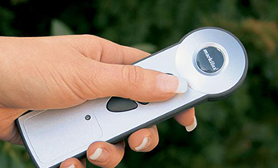

маркизы собранные в Германии с установкой в Москве и области
Маркизы markilux отмечены многочисленными наградами
"Сделано в Германии"-высокий стандарт качества, которого придерживаютсяmarkiluxвот уже более 40 лет.
Маркизы markilux отмечены самыми высокими международными наградами в области промышленного и профессионального дизайна, а также инновационных технологий.


Преимущества маркиз markilux

Собственное производство в Германии
Простота в управлении
Изготовление по индивидуальным размерам
Высокие требования к дизайну
Долговечные, продуманные системы и механизмы
Инновационные маркизные ткани
0
лет производству
0
видов маркиз
0
видов тканей
0
вариантов опций
0
возможных комбинаций
Мы изготавливаем сегодня: маркизы завтрашнего дня.
Дизайнерские маркизы markilux - это уникальное сочетание современного дизайна и новаторских технологий. Место, оформленное нашими маркизами, наполнится приятным освещением и комфортной температурой в любое время суток и станет любимым для Вас и Ваших гостей.
- Для частных домов
- Для балконов
- Для ресторанов
- Для бутиков
- Для яхт
- Для зимнего сада
- Для окон
- Для беседок и боковые
- Для открытых пространств
Закажите свою маркизу

markilux 6000 | Индивидуальная маркиза
Дизайнерская маркиза с множеством вариантов – один красивее другого. Из широкого ассортимента цветов маркиз, декоративных элементов и возможностей оснащения вы можете подобрать свой уникальный вариант. markilux 6000 впечатляет размерами и выдающимися техническими характеристиками. Украсьте свой дом самой популярной моделью в Германии.
Особенности: Светодиодные споты в выдвижном профиле. Вариативные декоративные элементы. Дополнительный затеняющий волан. Шарнирный рычаг с био-ремнем. Рама с блестящим хромированным покрытием.
Макс. размеры: 700 × 300 см.
Управление: Ручное. Система «Умный дом». Радио-двигатель
Опции: Светодиодные споты. Датчики солнца, ветра, дождя и тепло-излучатели.

markilux 970 | Прямолинейная маркиза
Маркизаmarkilux 970воплощает урбанистический стиль жизни. Прямые линии и четкий дизайн делают markilux 970 воплощением просты и элегантности.
Особенности: Цвет кассеты и цвет экрана комбинируется. Дополнительный затеняющий навес. Отсутствие несущего вала. Запатентовывай наклонный шарнир с ударным предохранителем. Компактная, прямоугольная кассета. Всего 14см высотой. Рычаг - шарнирный с био-ремнем.
Макс. размеры: 600 × 300 см; 500 × 350 см.
Управление: Ручное. Система «Умный дом». Радио-двигатель
Опции: Светодиодные споты. Датчики солнца, ветра, дождя и тепло-излучатели.

markilux 990 | Изящная маркиза
Маленькая, да удаленькая! Вы удивитесь, сколько технических хитростей скрывается в этой компактной кассете шириной всего 125 мм. При монтаже на потолок делает ее особенно хорошо подходящей для небольших террас и балконов.
Особенности: U-бразный выдвижной профиль. Впечатляющий угол наклона до 70°. Возможно исполнение с воланом. Блестящие хромированные торцевые крышки.
Макс. размеры: 500 × 300 см.
Управление: Ручное. Система «Умный дом». Радио-двигатель
Опции: Светодиодные споты. Датчики солнца, ветра, дождя и тепло-излучатели.

markilux MX-1 | Идеальная маркиза
Уже на первый взгляд маркиза markilux MX-1 впечатляет своей уникальной комбинацией внешней формы и функциональности. В сложенном состоянии она отличается конической сужающейся полной кассетой с глубиной 62 см в виде атмосферостойкого козырька, который защищает ваш фасад от внешних воздействий. В раскрытом состоянии она показывает свой настоящий размер. Эта идеальная маркиза является новаторской благодаря многочисленным техническим инновациям и получившему множество наград дизайну.
Особенности: Светодиодные споты в выступающем фасаде. Шарнирный рычаг с био-ремнем. Дополнительный затеняющий навес.
Макс. размеры: 700 × 415 см.
Управление: Ручное. Система «Умный дом». Радио-двигатель
Опции: Светодиодные споты. Датчики солнца, ветра, дождя и тепло-излучатели.

markilux pergola
В вопросах защиты от солнца и непогоды вам поможет маркиза markilux pergola. Маркизная система на тонких опорах и с боковыми направляющими с выносом до 6 метров дает обширную тень. При этом markilux pergola противостоит ветру. Благодаря дополнительному затеняющему навесу, tracfix, а также многочисленным возможностям освещения и вариантам опор у вас будут все возможности оборудовать свое любимое место на природе в соответствии со своими предпочтениями. Как бы сильно ни светило солнце, и откуда бы ни дул ветер: благодаря пергольной маркизе markilux pergola вы всегда будете спокойны.
Особенности: Закрытая полная кассета. Соединенная маркиза. Дополнительный затеняющий навес. Выдвижной профиль и направляющие.
Макс. размеры: 700 × 415 см.
Управление: Ручное. Система «Умный дом». Радио-двигатель
Опции: Светодиодные споты. Датчики солнца, ветра, дождя и тепло-излучатели.
markilux pergola
В вопросах защиты от солнца и непогоды вам поможет маркиза markilux pergola. Маркизная система на тонких опорах и с боковыми направляющими с выносом до 6 метров дает обширную тень. При этом markilux pergola противостоит ветру. Благодаря дополнительному затеняющему навесу, tracfix, а также многочисленным возможностям освещения и вариантам опор у вас будут все возможности оборудовать свое любимое место на природе в соответствии со своими предпочтениями. Как бы сильно ни светило солнце, и откуда бы ни дул ветер: благодаря пергольной маркизе markilux pergola вы всегда будете спокойны.
Особенности: Закрытая полная кассета. Соединенная маркиза. Дополнительный затеняющий навес. Выдвижной профиль и направляющие.
Макс. размеры: 700 × 415 см.
Управление: Ручное. Система «Умный дом». Радио-двигатель
Опции: Светодиодные споты. Датчики солнца, ветра, дождя и тепло-излучатели.
markilux planet | | Поворотная маркиза
Два в одном - зонт от солнца и маркиза, а также привлекательное украшение дома, создающее для вас отлично затененное пространство на свежем воздухе. Экранная маркиза markilux planet надежно защищает от солнечного света, очень стабильна и, кроме того, подвижна. С помощью простого в обращении рычага Easy-Go вы можете в варианте flex легко поворачивать экранную маркизу максимально на 335°, чтобы тень всегда была там, где она вам нужна. Тонкая опора легко удерживает дизайнерскую маркизу markilux. Сочетание функциональности и дизайна, которое впечатляет. Маркиза markilux planet еще лучше доказывает, что для markilux в центре внимания всегда находятся ваши потребности.
Особенности: Дополнительный затеняющий навес. Угол поворота - до 335°. Простой в обращении шарнирный рычаг Easy-Go. Позволяет легко поворачивать markilux planet.
Макс. размеры: 600 х 610 см, макс. 500 х 510 см
Управление: Шарнирный рычаг Easy-Go
Опции: Светодиодные споты.
markilux RS-2
Рамочная система markilux RS-2 отличается исключительной многосторонностью и возможностью адаптации. Различные модули объединяются с различными маркизами в настоящий ландшафт. Нет необходимости искать компромиссы в отношении размера. Многообразие оснащения также впечатляет. Вы можете выбирать между круглыми и прямоугольными опорами. Невозможно описать markilux RS-2: вам нужно увидеть эту маркизу в своем саду.
Особенности: Дизайнерские маркизы на ваш выбор Различные маркизы для зимних садов и с шарнирными рычагами могут по желанию комбинироваться с вертикальными или боковыми маркизами. Вариативные зажимные кольца Модульное решение с системой: несущие элементы можно свободно размещать между опорами.
Макс. размеры: Практически неограниченные благодаря модульной и гибкой рамочной системе.
Управление: Ручное.
Опции: Светодиодные споты. Датчики солнца, ветра, дождя и тепло-излучатели.
markilux syncra fix | Стационарная маркиза
Прочные стальные опоры жестко фиксируются к армированному бетонному основанию посредством болтов. Этим достигается необычайная прочность и надежность конструкции, а также устойчивость к максимальным ветровым нагрузкам, даже при значительных размерах тента. Характерной особенностью является возможность управления сторонами солнцезащитной системы независимо друг от друга. Дизайн и технические характеристики зависят от типа маркиз, применяемых в этой системе.
Особенности: Монтажная балка маркизы привинчивается на опорную плату. Требуется бетонный фундамент. Независимое друг от друга управление сторон. Возможна металлизация конструкции, нанесение глянцевого или матового напыления, антикоррозийная обработка, нанесение нано-покрытия.
Опции: Светодиодные споты. Датчики солнца, ветра, дождя и тепло-излучатели.

markilux syncra flex | Свободностоящая маркиза
Конструкционной особенностью является мобильное крепление системы с помощью стабилизирующего бокса с утяжеляющими элементами бордюрные камни. Возможна металлизация конструкции, нанесение глянцевого или матового напыления, антикоррозийная обработка, нанесение нано-покрытия. Имеется возможность управления сторонами солнцезащитной системы независимо друг от друга. Дизайн и технические характеристики зависят от типа маркиз, применяемых в этой системе.
Особенности:Свободностоящая монтажная балка маркизы с утяжеляющим каменным бордюром. Бордюрный камень не входит в комплект поставки.
Управление: Ручное.
Опции: Светодиодные споты. Датчики солнца, ветра, дождя и тепло-излучатели.
Уникальные маркизные ткани markilux - более 250 видов
Нити могут иметь до 16 миллионов оттенков необычайной яркости и стойкости цвета.
Вы найдете для себя самую красивую ткань для своей дизайнерской маркизы в специальных коллекциях водонепропускаемых и трудновозгораемых тканей.
Преимущества тканей маркиз markilux
Маркизные ткани изготовлены в Германии с помощью самой современной технологии. Цвет, качество и структура тканей создают настроение и атмосферу. К особым преимуществам тканей относится то, что яркие светящиеся цвета при дневном свете окрашивают и оттеняют белую изнаночную сторону, создавая при этом неповторимые переливы цветов. В темное же время суток белая сторона полотна отражает свет, делая обстановку дружественнее и светлее.

Долгий срок
службы
Окрашенные высокотехнологичные волокна и высококачественная обработка полотна являются гарантией самого красивого затененного уголка в мире – на протяжении долгих лет.

Фактор защиты
50+
Ткани markilux sunsilk и sunvas с фактором защиты 50+, что обеспечивает самую высокую защиту от УФ-излучения.

Устойчивость и
цветостойкость
Высокотехнологичная ткань производится в Эмсдеттене и проходит все тесты на восприимчивость к свету, ветру, влаге и прочим климатическим условиям.

Самоочищающаяся
ткань
Капли воды вбирают в себя частицы грязи и скатываются с маркизной ткани.

Стандарт
Oeko-Tex 100
Ткани сертифицированы согласно стандарту Oeko-Tex 100, что гарантирует отсутствие вредных для здоровья красителей или химикатов.

Бесшовное соединение
тканей
Уникальная технология скрепления тканей с помощью ультразвука придает особую прочность и тонкость месту соединения тканей.
Ознакомьтесь с коллекцией немецких тканей markilux
Умные маркизы markilux
Удобство эксплуатации, соответствует самым строгим требованиям и любым погодным условиям. С помощью многочисленных дополнительных опций для маркиз markilux, Вы можете создать свое уникальное свое индивидуальное пространство на природе.
Оформление внешнего вида
Хромированные элементы
Стильные торцевые крышки и зеркало с блестящим хромированным покрытием расставляют блестящие акценты и делают вашу маркизу вашей защитой от солнца с индивидуальным стилем
Пристеночный бортик

Тонкий алюминиевый профиль под цвет маркизы закрывает щель между маркизой и стеной. Дождь аккуратно отводится маркизой.
Волан
Небольшое декоративное полотно на выдвижном профиле придаст вашей маркизе классический внешний вид. На выбор есть различные формы воланов.
Освещение и тепло
markilux hotspot
Приятный свет и тепло до поздней ночи. Четыре галогеновых лампы и два теплоизлучателя объединены в устойчивом к атмосферным воздействия корпусе. Поставляются в сочетающемся с маркизой цвете. Монтируются в любом месте.
Теплоизлучательmarkilux
В мгновение ока можно почувствовать тепло и дольше наслаждаться вечером. С долгим сроком службы и энергоэффективный. В защищенном корпусе. 1400 или 2000 Ватт.
Светодиодное освещение
На кассете илина выдвижном профиле: поворотные светодиодные споты с регулируемойяркостью помогут создать вечером отличноенастроение на террасе.
Управление
Двигатель silentec
Необычайно тихий. Во много раз сокращает шум при сборке и выдвижениимаркиз с двигателями. Поставляется в зависимости от модели.
Дистанционное управление
Так просто создать комфорт. Тень, свет и тепло понажатию кнопки.
stretch
Отличное решение для узких ниш, террас или балконов. Маркизы с небольшой шириной благодаря двум перекрещивающимся рычагам могут выдвигаться со значительным выносом.
Датчики от непогоды
markilux vibrabox
Умный, чувствительный, не зависящий от электросети датчик. Реагирует на колебания и согласно ветровой нагрузке управляет складыванием оснащенной двигателем маркизы
Датчик солнца и ветра
Согласно текущим погодным условиям умная система управления обеспечивает автоматическое складывание и раскладывание маркизы.
Датчик дождя
Во время дождя маркиза автоматически складывается. Умная система управления надежно защищает полотно маркизы.